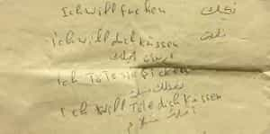

< < < Back
The Attacks On German Women Over New Year’s Eve Appear Organized And Planned – Return Of Kings
When you read the official press release of the Cologne police force on January 1st, you’ll get the impression that that particular New Year’s Eve was in no way remarkable. It was a night of peaceful celebration on the bridges over the Rhine river and in the down town area. The police handed out some tickets for vandalism (five more than in 2015) and assault (two more than in 2015). Shortly before midnight, the area in front of the central station was cleared to avoid mass panic being caused by fireworks.
There was no mention of the staggering amount of sexual assaults and robberies that had taken place. Now that the smoke is clearing, more reports are pouring in, not just from Cologne but from all over North Western Europe. So far, sexual assaults have been reported in Cologne (109), Hamburg (39), Frankfurt, (7) Bielefeld (5), Stuttgart (3), Stadtlohn (2) as well as in Salzburg (Austria), where Afghans and a Syrian were arrested for sexual assaults, Zurich (Switzerland) and Helsinki (Finland). This strongly suggests coordination and planning, possibly by Islamic terrorist groups. What we saw over New Year’s Eve may have been the first terrorist “rape bombing” of Europe.
Identical premeditated attacks in multiple countries
The attacks all followed the same pattern. Groups of Middle Eastern men converged en masse in a public place, surround young women, sexually assault them and steal anything that is not bolted down. The nature of these attacks—multiple attacks in multiple cities in multiple countries, all with the same modus operandi—raise the possibility that these attacks were centrally organized and coordinated. This is confirmed by the Helsinki police, who received word that large groups of Iraqi asylum seekers were planning to converge from several refugee centers on down town Helsinki, planning to assault and rob women.
Meanwhile, local German media reported that the Cologne police found handwritten translation aids in German-Arabic on several of the suspects they arrested, helpfully translating phrases and terms such as “I want to kiss you”, “I want to fuck you” and “I want to kill you”.

German-Arab translation aid found on NYE suspects, showing them how to say I want to fuck you, I want to kiss you and I want to kill you in German and Arabic
A witness report (in The Guardian, of all places) from Cologne describes how the men were coordinated on New Year’s Eve. Describing what she called “coordination tactics” among the men, Shabani said: “I watched for some time as three men who were smartly dressed gave out instructions. One time a group of three or four males would come up to them, be given instructions and sent away into the crowd. Then another group of four or five would come up, and they’d gesticulate in various directions and send them off again. It looked to me like they were clearly directing the events,” said Shabani, describing the evening as “chaotic”.
Together, these pieces of evidence suggest that the NYE attacks were premeditated and, likely, centrally organized. However, chances are that we won’t hear about that until it is too late, especially in the light of recent reports that the German police are under strict government orders to hide crimes involving refugees (unless refugees are attacked by nationalists). Bild writes: “In 2015, there were over a 1000 incidents involving refugees in the state of Saxony, including sexual assaults involving children and 11 murders. Only three of these murders were reported in the press, the rest was hushed up.”
In that light, the press release after Cologne’s NYE comes as no surprise. And the German authorities will never admit if the NYE sex attacks were centrally organized.
Systematic rape is a weapon of war
If these attacks are indeed centrally organized, they are a game changer. In the Arab world, there is no greater dishonor to a man than when a woman under his protection is violated. The shame is so great that men will kill their daughters or nieces, or force them to marry their rapists, in order to regain face. So when men from a culture that kills its violated women engage in mass sexual assaults, all at the same time in different countries, this can only be seen as a declaration of war. Systematic rape has long been used as a weapon of war and as a tool for ethnic cleansing. And now Europe finds itself invaded by hundreds of thousands of military age men, invited by its leaders, who rape and pillage as if they already conquered the continent.
As an act of terror, the mass sexual assault on that New Year’s Eve in Europe is different, as it is an attack on the women, daughters and nieces of Europe. Every man knows girls of that age, and every European man was already familiar with the groups of Middle Eastern hyenas prowling the streets and bothering girls. When European girls are attacked in an organized mass assault, this more than anything feels like an attack on our closest, most intimate tribe. It triggers our most primal instincts.
A low cost, low risk yet highly effective tactic
This attack, directed at what Europe (and every tribe) cherishes the most, was achieved without the need to procure weapons or explosives. All you need is a group of liquored up Middle Eastern men, urge them to follow their natural instincts and set them loose on the local population. It is low cost and, for the organizers, risk free. And it enrages the European men in a way that the other terrorist attacks never could, for their failure to protect their own women humiliates them, fills them with shame. As such, it comes as no surprise that German men are now forming vigilante groups.
But maybe these events were not organized at all. Maybe this is just what Middle Eastern men do, when they have the feeling they can get away with it. Perhaps they need very little encouragement to form mobs and assault women. We have all seen the videos of women—their own women—being attacked on Tahrir square, during the Arab Spring, or the videos of girls being chased through the streets of Cairo by hundreds of men. Frankly, I don’t know what is worse. Were these attacks organized or are they just something that happens, once the number of frustrated, entitled Arab men reaches a certain threshold?
Regardless of whether these sex attacks are part of an organized campaign, we will see more of them in the very near future. Carnival is widely celebrated in Europe, and while it doesn’t the scantily clad dancers seen in South America, it is a week of drunken celebrations, where masked revelers flood the streets and clubs. The only difference is that now Europe’s men have been warned. We’ll see whether they can protect their women this time.
Read Next: Germany Proves That “Rape Culture” Is Merely A Political Weapon Against Western Men